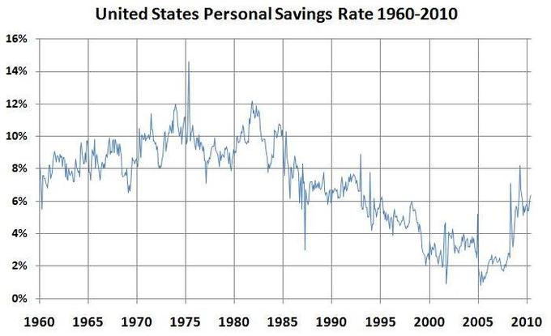
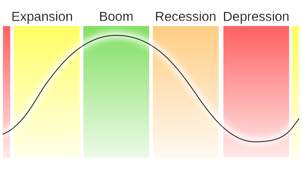
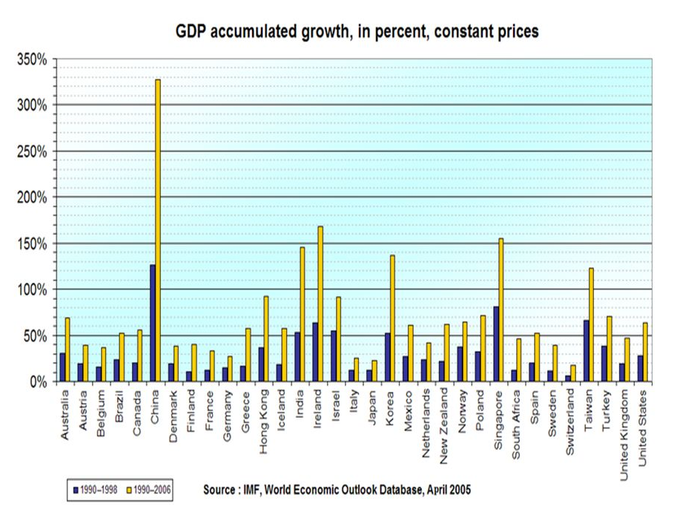

Table of Contents
18. Introduction to Macroeconomics
18.1. Key Topics in Macroeconomics
18.1.1. Defining Macroeconomics
18.1.2. The Importance of Aggregate Decisions about Consumption versus Saving and Investment
18.1.3. The Role of the Financial System
18.1.4. The Business Cycle: Definition and Phases
18.1.5. Recessions
18.1.6. Managing the Business Cycle
18.1.7. Long Run Growth
18. Introduction to Macroeconomics
18.1. Key Topics in Macroeconomics
18.1.1. Defining Macroeconomics
Macroeconomics is a branch of economics that focuses on the behavior and decision-making of an economy as a whole.
Learning Objective
Define Macroeconomics.
Key Points
- Macroeconomists study aggregated indicators such as GDP, unemployment rates, and price indices to understand how the whole economy functions.
- Macroeconomists develop models that explain the relationship between such factors as national income, output, consumption, unemployment, inflation, savings, investment, government spending and international trade.
- Though macroeconomics encompasses a variety of concepts and variables, but there are three central topics for macroeconomic research on the national level: output, unemployment, and inflation.
Key Terms
- microeconomics
- That field that deals with the small-scale activities such as that of the individual or company.
- Macroeconomics
- The study of the entire economy in terms of the total amount of goods and services produced, total income earned, the level of employment of productive resources, and the general behavior of prices.
Economics is comprised of many specializations; however, the two broad sub-groupings for economics are microeconomics and macroeconomics.
Macroeconomics
Macroeconomics is a branch of economics that focuses on the behavior and decision-making of an economy as a whole . In this manner it differs from the field of microeconomics, which evaluates the motivations of and relationships between individual economic agents.

Macroeconomics simplifies the complexities of the trading activities in an economy by distilling actions to primary participants and tracing the circular flow of activity between them.
Indicators
Macroeconomists study aggregated indicators such as GDP, unemployment rates, and price indices to understand how the whole economy functions and develop models that explain the relationship between such factors as national income, output, consumption, unemployment, inflation, savings, investment, government spending, and international trade. These variables taken as a whole comprise a grouping of variables that are referred to as economic indicators . These indicators, which are classified as leading, lagging and coincident relative to their predictive capability, in combination with one another provide economists with a directional attribution for the economy.
Macroeconomic Study
While macroeconomics is a broad field of study, there are two areas of research that are especially well publicized in the media: the evaluation of the business cycle and the growth rate of the economy. As a result, macroeconomics tends to be widely cited in discussions related to government intervention in economic expansion and contraction, as well as, with respect to the evaluation of economic policy.
Though macroeconomics encompasses a variety of concepts and variables, but there are three central topics for macroeconomic research on a national level: output, unemployment, and inflation. Outside of macroeconomic theory, these topics are also extremely important to all economic agents including workers, consumers, and producers.
18.1.2. The Importance of Aggregate Decisions about Consumption versus Saving and Investment
Money can either be consumed, invested, or saved (deferred consumption or investment).
Learning Objective
Explain the relationship between consumption, savings, and investment.
Key Points
- Aggregate demand is downward sloping as a result of three consumption sensitivities: wealth effect, interest rate effect and foreign exchange effect.
- Spending is related to income: Income – Spending = Net Savings.
- For the economy as a whole, aggregate savings is equal to investment, which is usually in the form of borrowed funds available as a result of savings.
Key Term
- aggregate demand
- The the total demand for final goods and services in the economy at a given time and price level.
There are three choices that market actors can make with their money. They can consume it by spending it on goods and services. For example, buying a movie ticket is spending money on consumption. They can also invest money by lending it to a company or project with the hope of getting back more money in the future. Finally, they can save it by putting it in a bank account (or keeping cash under the bed). Savings is essentially deferred consumption or investment; it is intended for use in the future.
In order to understand the effects of aggregate decisions of consumption, savings, and investment, we must look at aggregate demand (AD). AD is the total demand for final goods and services in the economy at a given time and price level. It specifies the amounts of goods and services that will be purchased at all possible price levels and is the demand for the gross domestic product of a country.
Components of Aggregate Demand
It is often cited that the aggregate demand curve is downward sloping because at lower price levels a greater quantity is demanded. While this is correct at the microeconomic, single good level, at the aggregate level this is incorrect. The aggregate demand curve is downward sloping but in variation with microeconomics, this is as a result of three distinct effects: the wealth effect, the interest rate effect and the exchange-rate effect.
Basically individuals will consume or purchase more when they feel wealthier or have access to inexpensive funding.
The wealth effect is specifically related to the value of assets; market participants will adjust consumption in-line with their perception of the appreciation or depreciation of held assets (a home; equity investments, etc.). The interest rate effect has to do with access to inexpensive funding, which provides an incentive to increase current period expenditures; while the exchange-rate effect has to do with expenditure decisions related to imports or foreign related expenditures, as the exchange rate is perceived to be favorable to the domestic currency, expenditures on foreign items or imports will increase.
Consumption, Savings, and Investment
Aggregate demand met by the market is spending, be it on consumption, investment, or other categories.
Spending is related to income:
Income – Spending = Net Savings
Rearranging:
Spending = Income – Net Savings = Income + Net Increase in Debt
In words: what you spend is what you earn, plus what you borrow: if you spend \$110 and earned \$100, then you must have net borrowed \$10; conversely if you spend \$90 and earn \$100, then you have net savings of \$10, or have reduced debt by \$10, for net change in debt of –\$10.
For the economy as a whole, aggregate savings is greater than or equal to investment, which is usually in the form of borrowed funds available as a result of savings. Through investment spending, savings influences aggregate demand.
Furthermore, since consumption and investment are components of GDP but saving is not, increased savings indirectly reduces GDP .
{kind=link}
Savings have declined in the US on aggregate since the 1980s, which means that the proportion of income spent on consumption and investment increased.
18.1.3. The Role of the Financial System
A financial market or system is a market in which people and entities can trade financial securities, commodities, and other fungible items.
Learning Objective
Explain the importance of the financial system
Key Points
- An economy which relies primarily on interactions between buyers and sellers to allocate resources is known as a market economy.
- Markets work by placing many interested buyers and sellers, including households, firms, and government agencies, in one "place," thus making it easier for them to find each other.
- Healthy financial systems are associated with the accelerated development of an economy.
Key Terms
- entrepreneurship
- The art or science of innovation and risk-taking for profit in business.
- investment
- A placement of capital in expectation of deriving income or profit from its use.
- saving
- the act of storing for future use
Financial System
A financial market or system is a market in which people and entities can trade financial securities, commodities, and other fungible items . Securities include stocks and bonds, and commodities include precious metals or agricultural goods.
Equity markets are the most closely followed of the financial markets. They provide transparent and active trading platforms that promote liquidity and access to funds to on a global scale.
There are both general markets (where many commodities are traded) and specialized markets (where only one commodity is traded). Markets work by placing many interested buyers and sellers, including households, firms, and government agencies, in one place, thus making it easier for them to find each other.
An economy that relies primarily on interactions between buyers and sellers to allocate resources is known as a market economy, in contrast either to a command economy or to a non-market economy such as a gift economy.
Role of the Financial System
Financial markets are associated with the accelerated growth of an economy. A financial market helps to achieve the following non-comprehensive list of goals:
- Saving mobilization: Obtaining funds from the savers or surplus units such as household individuals, business firms, public sector units, central government, state governments, etc. is an important role played by financial markets. Borrowers (e.g. bond issuers) are connected with lenders (e.g. bond buyers) in financial markets.
- Investment: Financial markets play a crucial role in arranging to invest funds. Both firms and individuals can invest in companies through financial markets (e.g. by buying stock).
- National Growth: An important role played by financial market is that, they contribute to a nation's growth by ensuring unfettered flow of surplus funds to deficit units. In other words, financial markets help shift money from industry to industry or firm to firm based on the supply and demand for their products.
- Entrepreneurship growth: Financial markets allow entrepreneurs (and established firms) to access the funds needed to invest in projects or companies.
18.1.4. The Business Cycle: Definition and Phases
The term business cycle refers to economy-wide fluctuations in production, trade, and general economic activity.
Learning Objective
Identify features of the economic business cycle
Key Points
- Business cycles are identified as having four distinct phases: expansion, peak, contraction, and trough.
- Business cycle fluctuations occur around a long-term growth trend and are usually measured by considering the growth rate of real gross domestic product.
- In the United States, it is generally accepted that the National Bureau of Economic Research (NBER) is the final arbiter of the dates of the peaks and troughs of the business cycle.
Key Terms
- contraction
- A period of economic decline or negative growth.
- peak
- The highest value reached by some quantity in a time period.
- trough
- The lowest turning point of a business cycle
- expansion
- The act or process of expanding.
The Business Cycle
The term "business cycle" (or economic cycle or boom-bust cycle) refers to economy-wide fluctuations in production, trade, and general economic activity. From a conceptual perspective, the business cycle is the upward and downward movements of levels of GDP (gross domestic product) and refers to the period of expansions and contractions in the level of economic activities (business fluctuations) around a long-term growth trend .

The phases of a business cycle follow a wave-like pattern over time with regard to GDP, with expansion leading to a peak and then followed by contraction leading to a trough.
Business Cycle Phases
Business cycles are identified as having four distinct phases: expansion, peak, contraction, and trough.
An expansion is characterized by increasing employment, economic growth, and upward pressure on prices. A peak is realized when the economy is producing at its maximum allowable output, employment is at or above full employment, and inflationary pressures on prices are evident. Following a peak an economy, typically enters into a correction which is characterized by a contraction, growth slows, employment declines (unemployment increases), and pricing pressures subside. The slowing ceases at the trough and at this point the economy has hit a bottom from which the next phase of expansion and contraction will emerge.
Business Cycle Fluctuations
Business cycle fluctuations occur around a long-term growth trend and are usually measured by considering the growth rate of real gross domestic product.
In the United States, it is generally accepted that the National Bureau of Economic Research (NBER) is the final arbiter of the dates of the peaks and troughs of the business cycle. An expansion is the period from a trough to a peak, and a recession as the period from a peak to a trough. The NBER identifies a recession as "a significant decline in economic activity spread across the economy, lasting more than a few months, normally visible in real GDP, real income, employment, industrial production. " This is significantly different from the commonly cited definition of a recession being signaled by two consecutive quarters of decline in real GDP.
18.1.5. Recessions
A recession is a business cycle contraction; a general slowdown in economic activity.
Learning Objective
Explain the connection between a recession and other macroeconomic variables
Key Points
- Macroeconomic indicators such as GDP (Gross Domestic Product), employment, investment spending, capacity utilization, household income, business profits, and inflation fall, while bankruptcies and the unemployment rate rise.
- Most mainstream economists believe that recessions are caused by inadequate aggregate demand in the economy, and favor the use of expansionary macroeconomic policy during recessions.
- Strategies favored for moving an economy out of a recession vary depending on which economic school the policymakers follow.
Key Term
- recession
- A period of reduced economic activity
In economics, a recession is a business cycle contraction; a general slowdown in economic activity. Macroeconomic indicators such as GDP (Gross Domestic Product), employment, investment spending, capacity utilization, household income, business profits, and inflation fall, while bankruptcies and the unemployment rate rise. Recessions generally occur when there is a widespread drop in spending (an adverse demand shock). This may be triggered by various events, such as a financial crisis, an external trade shock, an adverse supply shock, or the bursting of an economic bubble .
Recessions are characterized as periods of fear and uncertainty; historically they also were a time of widespread panic. However, as confidence in the central bank and federal government increased, though fear and uncertainty remain, panic-conditioned "runs" as depicted in the photo above have become an element of the past.
Attributes of Recession
A recession has many attributes that can occur simultaneously, these include declines in component measures (economic indicators) of economic activity (GDP) such as consumption, investment, government spending, and net export activity. These indicators in turn, reflect underlying drivers such as employment levels and skills, household savings rates, corporate investment decisions, interest rates, demographics, and government policies.
Causes of Recession
Under ideal conditions, a country's economy should have the household sector as net savers and the corporate sector as net borrowers, with the government budget nearly balanced and net exports near zero. When these relationships become imbalanced, recession can develop within a country or create pressure for recession in another country. Policy responses are often designed to drive the economy back towards this ideal state of balance.
Most mainstream economists believe that recessions are caused by inadequate aggregate demand in the economy, and favor the use of expansionary macroeconomic policy during recessions.
Policy Responses to Recession
Strategies favored for moving an economy out of a recession vary depending on which economic school the policymakers follow. Monetarists would favor the use of expansionary monetary policy, while Keynesian economists may advocate increased government spending to spark economic growth. Supply-side economists may suggest tax cuts to promote business capital investment. When interest rates reach the boundary of an interest rate of zero percent (zero interest-rate policy) conventional monetary policy can no longer be used and government must use other measures to stimulate recovery.
A severe (GDP down by 10%) or prolonged (three or four years) recession is referred to as an economic depression, although some argue that their causes and cures can be different. As an informal shorthand, economists sometimes refer to different recession shapes, such as V-shaped, U-shaped, L-shaped, and W-shaped recessions.
18.1.6. Managing the Business Cycle
When the economy is not at a steady state, the government and monetary authorities have policy mechanisms to move the economy back to consistent growth.
Learning Objective
Identify how changes in monetary and fiscal policy can manage the business cycle, and why that is desirable
Key Points
- If the economy needs to be slowed, enacted policies are referred to as being contractionary and if the economy needs to be stimulated the policy prescription is expansionary.
- Central banks use monetary policy measures to facilitate consistent economic growth, while the government uses fiscal policy.
- The government policy measures are referred to as fiscal policy.
Key Terms
- fiscal policy
- Government policy that attempts to influence the direction of the economy through changes in government spending or taxes.
- monetary policy
- The process by which the central bank, or monetary authority manages the supply of money, or trading in foreign exchange markets.
The business cycle is comprised of the upward and downward movement in the level of Gross Domestic Product (GDP) over time . These fluctuations occur around a long-term growth trend, and typically involve shifts over time between periods of relatively rapid economic growth (an expansion or boom), and periods of relative stagnation or decline (a contraction or recession).
{kind=link}
The economy moves through expansion and contraction on a routine basis; policy mechanisms allow for smoother transitions and soften landings.
Policy Responses
When the economy is not at a steady state and instead is at a point of either overheating (growing to fast) or slowing, the government and monetary authorities have policy mechanisms, fiscal and monetary, respectively, at their disposal to help move the economy back to a steady state growth trajectory. If the economy needs to be slowed, these policies are referred to as contractionary and if the economy needs to be stimulated the policy prescription is expansionary.
Expansionary Policy
Expansionary fiscal policy involves government spending exceeding tax revenue, and is usually undertaken during recessions. Fiscal authorities will increase government spending in order to revive the economy.
Expansionary monetary policy relies on the central bank increasing availability of loanable funds through three mechanisms: open market operations, discount rate, and the reserve ratio. As the supply of loanable funds increases, the interest rate is expected to decrease and thereby increase the desire to borrow funds for consumption and investment purposes.
Contractionary Policy
Contractionary fiscal policy is opposite of the action taken in an expansionary purpose, and occurs when government spending is lower than tax revenue.
Similarly, contractionary monetary policy is the opposite of expansionary monetary policy and occurs when the supply of loanable funds is limited, to reduce the access and availability to relatively inexpensive credit.
18.1.7. Long Run Growth
Long run growth is the increase in the market value of the goods and services produced by an economy over time.
Learning Objective
Explain the impact of consistent long-run growth on an economy.
Key Points
- Growth is usually calculated in real terms, meaning that it is inflation-adjusted to eliminate the distorting effect of inflation on the price of goods produced.
- Policymakers strive for continued and consistent growth.
- The large impact of a relatively small growth rate over a long period of time is due to the power of compounding.
- A small difference in economic growth rates between countries can result in very different standards of living for their populations if this small difference continues for many years.
Key Term
- economic growth
- The increase of the economic output of a country.
Long run growth is the increase in the market value of the goods and services produced by an economy over time. It is conventionally measured as the percentage of increase in real gross domestic product, or real GDP. Growth is usually calculated in real terms: it is inflation-adjusted to eliminate the distorting effect of inflation on the price of goods produced. In economics, economic growth or economic growth theory typically refers to growth of potential output, which is production at full employment.
Policymakers strive for steady, continued, and consistent growth because it is predictable and manageable for both policymakers and market participants. Over long periods of time even small rates of growth, like a 2% annual increase, have large effects. For example, the United Kingdom experienced a 1.97% average annual increase in its inflation-adjusted GDP between 1830 and 2008. In 1830, the GDP was £41,373 million. It grew to £1,330,088 million by 2008 (in 2005 pounds). A growth rate that averaged 1.97% over 178 years resulted in a 32-fold increase in GDP by 2008 .
{kind=link}
Growth in GDP can be significant, especially when annual growth rates are fairly consistent.
The Power of Compounding
The large impact of a relatively small growth rate over a long period of time is due to the power of compounding. A growth rate of 2.5% per annum leads to a doubling of the GDP within 29 years, while a growth rate of 8% per annum (an average exceeded by China between 2000 and 2010) leads to a doubling of GDP within 10 years. Therefore, a small difference in economic growth rates between countries can result in very different standards of living for their populations if this small difference continues for many years.
Note: an easy way to approximate the doubling time of a number with a constant growth rate is to use the Rule of 72. Divide 72 by the percentage annual growth rate to get a rough estimate of the number of years until the number doubles. For example, at a 10%, divide 72 by 10 to get a doubling time of 7.2 years. The actual doubling time is 7.27 years, so the rule of 72 is a good rough approximation.